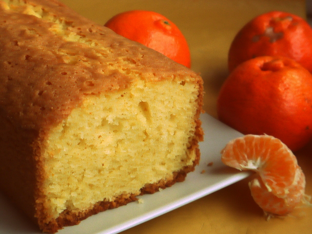

Budín de mandarina

Ingredientes
- 2 mandarinas
- 2 tazas de harina leudante (o harina + 2 cdita. de polvo para hornear)
- 1 taza de azúcar
- 3 huevos
- 1 taza de aceite neutro (de girasol o maíz)
Preparacion
- Precalentar el horno, como siempre, en súper mínimo.
- Batir los huevos con el azúcar.
- Agregar una de las tazas de harina y remover hasta unir completamente
- Agregar la taza de aceite y lo mismo: remover hasta unir (puede hacerse con espátula o con batidora).
- Incorporar la cáscara rallada y el jugo de las 2 mandarinas. Si son muy jugosas, poné solo el jugo de una.
- Incorporar la última taza de harina hasta unir.
- Llevar a horno suave por 45 minutos o hasta que esté dorado por arriba.